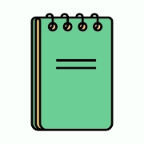

En mi búsqueda por la aplicación de Notas perfecta, Zettel Notes ha dado un golpe muy fuerte sobre la mesa. Con una perfecta sincronización WebDAV y Dropbox, personalización de temas, un magnífico editor Markdown, que desde mi punto de vista diría que es la mejor aplicación editor Markdown de Android, por encima incluso de Markor, además teniendo integrado toda la potencia del método Zettelkasten, hacen de Zettel Notes una aplicación moderna y súper completa.

Otra de las características muy interesantes, como explico más adelante, es que permite la importación de artículos completos vistos en una web a Markdown dentro de un repositorio de Zettel Notes.
El creador y desarrollador Rohit Sharma, es una persona muy próxima y está totalmente abierto a sugerencias para mejorar la aplicación.
Zettel Notes es una aplicación creada por Rohit Sharma, que te permite tomar de notas en Markdown y utilizar el método Zettelkasten si lo deseamos, de un modo sencillo y con una interfaz cómoda y amigable.
Es gratuita, sin anuncios, sin permisos ocultos y no recopila datos de usuario. Por el momento la aplicación no es Software Libre.
Las notas se almacenan como archivos de Markdown separados de un modo abierto, permitiendo acceder a estas de un modo transparente incluso compartiéndolas con otras aplicaciones.
El modo de uso es crear un directorio/repositorio que contengan tus notas existentes desde la opción de repositorio en el menú.
Una vez creado el repositorio, podremos sincronizarlo via WebDAV, por lo tanto también podemos hacerlo via Nextcloud, ownCloud, Box.com, Yandex… y también Dropbox, Permitiendo tener todas nuestras notas perfectamente sincronizadas con nuestro servidor.
CARACTERÍSTICAS DE LA APLICACIÓN:
CARACTERÍSTICAS DE MARKDOWN:
CARACTERÍSTICAS ESPECÍFICAS DEL CUADRO DE NOTAS:
De momento solo está disponible desde Google Play.
De momento no tenemos Zettel Notes para escritorio y tampoco está previsto. Pero si tenemos nuestras notas sicronizadas con nuestro escritorio, podemos utilizar aplicaciones como Obsidian.
Si compartes el contenido de una página web con Zettel Notes, no solo guardará el enlace creando una nueva nota, sino que también importará todo el contenido de la web que estamos compartiendo.
Brutal!!!
Canal de Telegram: https://t.me/zettelnotes Grupo de soporte de Telegram: https://t.me/joinchat/DZ2eFcOk3Mo4MDk1
Publicado por Angel el domingo 29 agosto del 2021
También te puede interesar:
Powered by org-bash-blog
Writing in orgmode whith emacs

Este obra está bajo una licencia de Creative Commons Reconocimiento-NoComercial-CompartirIgual 4.0 Internacional.